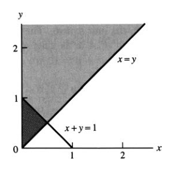
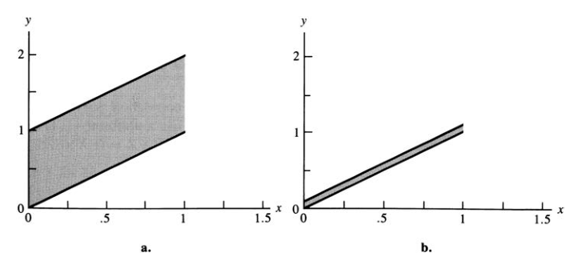
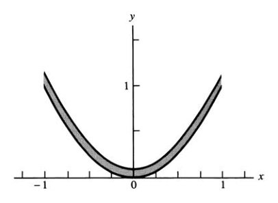
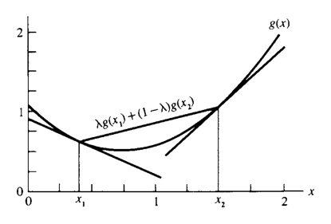
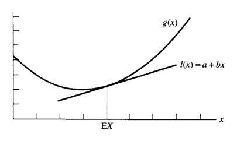

4 여러 확률변수
“I confess that I have been blind as a mole, but it is better to learn wisdom late than never to learn it at all.”
— Sherlock Holmes, The Man with the Twisted Lip
- 앞 장들에서는 하나의 확률변수만 포함하는 확률모형을 주로 다루었다.
- 이런 모형을 일변량 모형(univariate model)이라고 한다.
- 실제 자료에서는 하나의 숫자만 관측되는 경우가 드물다.
- 보통은 여러 사람의 체중, 한 사람의 키·체중·혈압·체온, 여러 시점의 측정값처럼 여러 확률변수를 동시에 관측한다.
- 이 장에서는 둘 이상의 확률변수를 동시에 다루는 다변량 모형(multivariate model)을 공부한다.
- 초반부는 특히 두 확률변수 \((X,Y)\)를 다루는 이변량 모형(bivariate model)에 집중한다.
4.1 결합분포와 주변분포
4.1.1 확률벡터
- 일변량 확률변수는 표본공간 \(S\)에서 실수집합으로 가는 함수이다.
- 여러 확률변수를 동시에 다루면 확률벡터가 된다.
4.1.1.1 정의
- \(n\)차원 확률벡터는 표본공간 \(S\)에서 \(n\)차원 유클리드 공간 \(\mathbb R^n\)으로 가는 함수이다.
- 예를 들어 표본공간의 각 점에 순서쌍 \((x,y)\in\mathbb R^2\)를 대응시키면 이변량 확률벡터 \((X,Y)\)가 정의된다.
4.1.2 예제: 주사위 표본공간
- 공정한 주사위 두 개를 던지는 실험을 생각하자.
- 표본공간에는 36개의 동일가능한 점이 있다.
- 예:
- \((3,3)\): 두 주사위가 모두 3
- \((4,1)\): 첫 번째 주사위가 4, 두 번째 주사위가 1
- 각 표본점에 두 값을 대응시킨다.
\[ X=\text{두 주사위 눈의 합}, \qquad Y=|\text{두 주사위 눈의 차}|. \]
- 예를 들어
- 표본점 \((3,3)\)에서는 \(X=6\), \(Y=0\)
- 표본점 \((4,1)\)에서는 \(X=5\), \(Y=3\)
- 표본점 \((1,4)\)에서도 \(X=5\), \(Y=3\)
- 따라서
\[ P(X=5,Y=3)=\frac{2}{36}=\frac{1}{18}. \]
- 또한 \((3,3)\) 하나만 \(X=6,Y=0\)을 만들므로
\[ P(X=6,Y=0)=\frac{1}{36}. \]
- 더 복잡한 사건도 같은 방식으로 계산한다.
- 예를 들어 \(X=7\)이고 \(Y\le4\)인 표본점은 \((4,3),(3,4),(5,2),(2,5)\)이므로
\[ P(X=7,Y\le4)=\frac{4}{36}=\frac19. \]
4.1.3 결합확률질량함수
4.1.3.1 정의
- \((X,Y)\)가 이산형 이변량 확률벡터일 때
\[ f(x,y)=P(X=x,Y=y) \]
를 \((X,Y)\)의 결합확률질량함수(joint pmf)라고 한다. - 필요하면
\[ f_{X,Y}(x,y) \]
라고 써서 어떤 확률벡터의 결합 pmf인지 명시한다.
- 결합 pmf는 확률벡터 \((X,Y)\)의 분포를 완전히 정의한다.
- 임의의 집합 \(A\subset\mathbb R^2\)에 대해
\[ P((X,Y)\in A) = \sum_{(x,y)\in A}f(x,y). \]
- 이산형 확률벡터에서는 \(A\)가 무한하거나 비가산집합처럼 보이더라도 실제로는 \(f(x,y)>0\)인 점들만 합하면 된다.
4.1.4 결합 pmf와 기댓값
- \(g(x,y)\)가 \((X,Y)\)의 가능한 값들에서 정의된 실수값 함수라면 \(g(X,Y)\)는 확률변수이다.
- 기댓값은
\[ E[g(X,Y)] = \sum_{(x,y)\in\mathbb R^2} g(x,y)f(x,y). \]
4.1.5 예제: \(EXY\) 계산
- 주사위 예제에서 \(g(x,y)=xy\)라고 두면
\[ EXY = \sum_{(x,y)}xyf(x,y). \]
- 가능한 \((x,y)\) 값 21개에 대해 \(xyf(x,y)\)를 모두 더하면 된다.
- 이 방식은 표본공간을 직접 추적하는 것보다 결합 pmf를 이용하는 계산이 더 간단함을 보여준다.
4.1.6 결합 pmf의 조건
- 어떤 함수 \(f(x,y)\)가 이산형 확률벡터의 결합 pmf가 되려면 다음을 만족해야 한다.
\[ f(x,y)\ge0 \quad\text{for all }(x,y), \]
\[ \sum_{(x,y)\in\mathbb R^2}f(x,y)=1. \]
- 이 조건을 만족하면 실제 표본공간을 명시하지 않아도 \((X,Y)\)의 확률모형을 정의할 수 있다.
4.1.7 예제: 결합 pmf 정의
- 다음처럼 정의하자.
\[ f(0,0)=f(0,1)=\frac16, \]
\[ f(1,0)=f(1,1)=\frac13, \]
- 그 외의 \((x,y)\)에서는 \(f(x,y)=0\)이다.
- 전체 합은
\[ \frac16+\frac16+\frac13+\frac13=1 \]
이므로 이는 어떤 이변량 확률벡터의 결합 pmf이다. - 예를 들어
\[ P(X=Y)=f(0,0)+f(1,1)=\frac12. \]
4.1.8 주변분포
- 결합분포가 있더라도 때로는 \(X\)만 또는 \(Y\)만의 분포가 필요하다.
- \(X\)의 pmf를 결합모형의 맥락에서 주변 pmf(marginal pmf)라고 부른다.
4.1.8.1 정리
- \((X,Y)\)가 결합 pmf \(f_{X,Y}(x,y)\)를 갖는 이산형 확률벡터라면 주변 pmf는
\[ f_X(x)=\sum_{y\in\mathbb R}f_{X,Y}(x,y), \]
\[ f_Y(y)=\sum_{x\in\mathbb R}f_{X,Y}(x,y). \]
- 즉, 관심 없는 변수를 모두 더해 제거한다.
4.1.9 예제: 주사위의 주변 pmf
- 주사위 예제에서 \(Y=0\)이 되는 경우는 두 주사위가 같은 경우이다.
- 따라서
\[ f_Y(0)=\frac16. \]
- 마찬가지로
\[ f_Y(1)=\frac{5}{18},\quad f_Y(2)=\frac29,\quad f_Y(3)=\frac16,\quad f_Y(4)=\frac19,\quad f_Y(5)=\frac1{18}. \]
- 이 값들의 합은 1이다.
- 주변 pmf는 \(Y\)만 포함하는 확률이나 기댓값을 계산할 때 사용한다.
4.1.10 예제: 주변 pmf로 확률과 기댓값 계산
- 위 주변분포에서
\[ P(Y<3) = f_Y(0)+f_Y(1)+f_Y(2) = \frac16+\frac5{18}+\frac29 = \frac23. \]
- 또한
\[ EY^3 = \sum_y y^3f_Y(y). \]
주변분포만으로는 결합분포를 알 수 없다.
- 결합분포는 주변분포보다 더 많은 정보를 담고 있다.
- 같은 주변분포를 가지는 서로 다른 결합분포가 많다.
- 따라서 \(f_X(x)\)와 \(f_Y(y)\)만 알아서는 일반적으로 \(f_{X,Y}(x,y)\)를 복원할 수 없다.
- 두 변수 사이의 관계 또는 의존구조는 결합분포에 포함된다.
4.1.11 연속형 결합 pdf
4.1.11.1 정의
- 함수 \(f(x,y)\)가 연속형 이변량 확률벡터 \((X,Y)\)의 결합확률밀도함수(joint pdf)라는 것은 모든 \(A\subset\mathbb R^2\)에 대해
\[ P((X,Y)\in A) = \iint_A f(x,y)\,dx\,dy \]
가 성립한다는 뜻이다.
- 결합 pdf는 다음 조건을 만족한다.
\[ f(x,y)\ge0 \quad\text{for all }(x,y), \]
\[ \int_{-\infty}^{\infty} \int_{-\infty}^{\infty} f(x,y)\,dx\,dy = 1. \]
4.1.12 연속형에서 기댓값과 주변 pdf
- \(g(X,Y)\)의 기댓값은
\[ E[g(X,Y)] = \int_{-\infty}^{\infty} \int_{-\infty}^{\infty} g(x,y)f(x,y)\,dx\,dy. \tag{4.1.2} \]
- 주변 pdf는
\[ f_X(x)= \int_{-\infty}^{\infty}f(x,y)\,dy, \qquad -\infty<x<\infty, \tag{4.1.3} \]
\[ f_Y(y)= \int_{-\infty}^{\infty}f(x,y)\,dx, \qquad -\infty<y<\infty. \]
4.1.13 예제: 결합확률 계산 I
- 다음 결합 pdf를 생각하자.
\[ f(x,y)= \begin{cases} 6xy^2, & 0<x<1,\;0<y<1,\\ 0, & \text{otherwise}. \end{cases} \]
- 전체 적분은
\[ \int_0^1\int_0^1 6xy^2\,dx\,dy=1 \]
이므로 올바른 결합 pdf이다.
- \(P(X+Y\ge1)\)을 구하려면 단위정사각형 안에서 \(x+y\ge1\)인 영역에 대해 적분한다.
\[ P(X+Y\ge1) = \int_0^1\int_{1-y}^{1}6xy^2\,dx\,dy = \frac9{10}. \]
- \(X\)의 주변 pdf는
\[ f_X(x)=\int_0^1 6xy^2\,dy=2x, \qquad 0<x<1. \]
- 따라서
\[ P\left(\frac12<X<\frac34\right) = \int_{1/2}^{3/4}2x\,dx = \frac5{16}. \]
4.1.14 예제: 결합확률 계산 II
- 다음 결합 pdf를 생각하자.
\[ f(x,y)=e^{-y}, \qquad 0<x<y<\infty. \]
- 지지집합은 \(0<x<y<\infty\)이다.
- \(P(X+Y\ge1)\)을 직접 적분할 수도 있지만, 여집합 \(X+Y<1\)을 사용하는 것이 더 쉽다.
- 아래 그림은 관련 영역을 보여준다.

- 계산은
\[ \begin{aligned} P(X+Y\ge1) &= 1-P(X+Y<1)\\ &= 1-\int_0^{1/2}\int_x^{1-x}e^{-y}\,dy\,dx\\ &= 2e^{-1/2}-e^{-1}. \end{aligned} \]
- 이 예제의 핵심:
- 이변량 적분에서는 영역 그림을 그리는 것이 매우 중요하다.
- 지지집합과 사건 영역의 교집합을 정확히 파악해야 한다.
4.1.15 결합 cdf
- 결합누적분포함수는
\[ F(x,y)=P(X\le x,Y\le y) \]
로 정의된다.
- 연속형 이변량 확률벡터에서는
\[ F(x,y)= \int_{-\infty}^{x} \int_{-\infty}^{y} f(s,t)\,dt\,ds. \]
- 이변량 미적분의 기본정리에 의해 pdf의 연속점에서
\[ \frac{\partial^2 F(x,y)}{\partial x\,\partial y} = f(x,y). \tag{4.1.4} \]
4.2 조건부분포와 독립성
- 두 확률변수 \((X,Y)\)가 관측될 때 두 변수의 값은 서로 관련될 수 있다.
- 예:
- 사람의 키 \(X\)와 체중 \(Y\)
- 키가 73인치라는 정보는 체중이 200파운드 이상일 가능성에 영향을 준다.
- 이런 관계를 다루기 위해 조건부분포가 필요하다.
- 반대로 \(X\)를 알아도 \(Y\)에 대한 정보가 전혀 늘지 않는 경우를 독립이라고 한다.
4.2.1 이산형 조건부 pmf
4.2.1.1 정의
- \((X,Y)\)가 결합 pmf \(f(x,y)\)와 주변 pmf \(f_X(x)\), \(f_Y(y)\)를 갖는다고 하자.
- \(f_X(x)>0\)인 \(x\)에 대해 \(Y\)의 조건부 pmf는
\[ f(y\mid x) = P(Y=y\mid X=x) = \frac{f(x,y)}{f_X(x)}. \]
- \(f_Y(y)>0\)인 \(y\)에 대해 \(X\)의 조건부 pmf는
\[ f(x\mid y) = P(X=x\mid Y=y) = \frac{f(x,y)}{f_Y(y)}. \]
4.2.2 예제: 조건부확률 계산
- 결합 pmf가 다음과 같다고 하자.
\[ f(0,10)=f(0,20)=\frac2{18}, \]
\[ f(1,10)=f(1,30)=\frac3{18}, \]
\[ f(1,20)=\frac4{18}, \qquad f(2,30)=\frac4{18}. \]
- 주변 pmf는
\[ f_X(0)=\frac4{18}, \qquad f_X(1)=\frac{10}{18}, \qquad f_X(2)=\frac4{18}. \]
- \(X=0\)일 때
\[ f(10\mid0)=\frac{2/18}{4/18}=\frac12, \qquad f(20\mid0)=\frac12. \]
- \(X=1\)일 때
\[ f(10\mid1)=\frac3{10}, \qquad f(20\mid1)=\frac4{10}, \qquad f(30\mid1)=\frac3{10}. \]
- \(X=2\)일 때는
\[ f(30\mid2)=1. \]
- 따라서
\[ P(Y>10\mid X=1)=\frac7{10}, \qquad P(Y>10\mid X=0)=\frac12. \]
4.2.3 연속형 조건부 pdf
- 연속형에서는 \(P(X=x)=0\)이므로 사건 \(X=x\)로 조건부확률을 직접 정의할 수 없다.
- 그러나 pdf를 이용하면 이산형과 유사한 형태로 조건부 pdf를 정의할 수 있다.
4.2.3.1 정의
- \((X,Y)\)가 결합 pdf \(f(x,y)\)와 주변 pdf \(f_X(x),f_Y(y)\)를 갖는다고 하자.
- \(f_X(x)>0\)인 \(x\)에 대해
\[ f(y\mid x) = \frac{f(x,y)}{f_X(x)} \]
를 \(X=x\)가 주어졌을 때 \(Y\)의 조건부 pdf라고 한다.
- \(f_Y(y)>0\)인 \(y\)에 대해
\[ f(x\mid y) = \frac{f(x,y)}{f_Y(y)} \]
를 \(Y=y\)가 주어졌을 때 \(X\)의 조건부 pdf라고 한다.
4.2.4 조건부기댓값과 조건부분산
- \(g(Y)\)의 조건부기댓값은 이산형에서
\[ E[g(Y)\mid x] = \sum_y g(y)f(y\mid x) \]
이고, 연속형에서
\[ E[g(Y)\mid x] = \int_{-\infty}^{\infty}g(y)f(y\mid x)\,dy \]
이다.
- \(E[g(Y)\mid X]\)는 \(X\)의 값에 따라 달라지는 확률변수이다.
- 조건부기댓값은 \(X\)를 알고 있을 때 \(Y\)에 대한 최적 예측값 역할을 한다.
4.2.5 예제: 조건부 pdf 계산
- 예제 4.1.12처럼
\[ f(x,y)=e^{-y}, \qquad 0<x<y<\infty \]
라고 하자.
- \(X\)의 주변 pdf는 \(x>0\)에서
\[ f_X(x)=\int_x^\infty e^{-y}\,dy=e^{-x}. \]
- 따라서 \(x>0\)에서
\[ f(y\mid x) = \frac{e^{-y}}{e^{-x}} = e^{-(y-x)}, \qquad y>x. \]
- 이는 위치모수가 \(x\)이고 척도모수가 1인 지수분포이다.
- 조건부 평균은
\[ E(Y\mid X=x)= \int_x^\infty y e^{-(y-x)}\,dy = 1+x. \]
- 조건부분산은
\[ Var(Y\mid x)=1. \]
- 주변적으로는 \(Y\sim Gamma(2,1)\)이라서 \(Var(Y)=2\)이다.
- \(X=x\)를 알면 \(Y\)의 변동성이 줄어든다.
4.2.6 조건부분포의 가족
- \(Y\mid X\)라는 표현은 \(X=x\)의 각 값마다 달라지는 조건부분포의 전체 가족을 의미한다.
- 예를 들어
\[ Y\mid X\sim Binomial(X,p) \]
라고 쓰면, \(X=x\)일 때
\[ Y\mid X=x\sim Binomial(x,p) \]
라는 뜻이다.
- 결합분포는 조건부분포와 주변분포를 곱해 정의할 수도 있다.
\[ f(x,y)=f(y\mid x)f_X(x). \]
4.2.7 독립성
4.2.7.1 정의
- \((X,Y)\)가 결합 pdf 또는 pmf \(f(x,y)\)와 주변 pdf 또는 pmf \(f_X(x)\), \(f_Y(y)\)를 갖는다고 하자.
- 모든 \(x,y\)에 대해
\[ f(x,y)=f_X(x)f_Y(y) \tag{4.2.1} \]
가 성립하면 \(X\)와 \(Y\)는 독립이다.
- 독립이면
\[ f(y\mid x)=f_Y(y) \]
가 되어 \(X=x\)를 알아도 \(Y\)의 분포가 바뀌지 않는다.
4.2.8 예제: 독립성 확인 I
- 어떤 결합 pmf에서 주변분포를 구한 뒤 식 (4.2.1)을 모든 \((x,y)\)에 대해 확인해야 한다.
- 일부 점에서만 성립한다고 독립이 되는 것은 아니다.
- 예를 들어
\[ f(10,3)\ne f_X(10)f_Y(3) \]
이면 독립이 아니다.
4.2.9 보조정리: 인수분해 기준
- \((X,Y)\)가 결합 pdf 또는 pmf \(f(x,y)\)를 가질 때 다음은 동치이다.
- \(X\)와 \(Y\)가 독립이다.
- 어떤 함수 \(g(x)\)와 \(h(y)\)가 존재하여 모든 \(x,y\)에 대해
\[ f(x,y)=g(x)h(y) \]
로 쓸 수 있다.
- 이 기준은 주변분포를 직접 계산하지 않고 독립성을 확인할 때 유용하다.
4.2.10 예제: 독립성 확인 II
- 결합 pdf가
\[ f(x,y)=\frac{1}{384}x^2y^4e^{-y-x/2}, \qquad x>0,\;y>0 \]
라고 하자. - 이를
\[ g(x)=x^2e^{-x/2}I(x>0), \]
\[ h(y)=\frac{y^4e^{-y}}{384}I(y>0) \]
로 쓸 수 있으므로
\[ f(x,y)=g(x)h(y). \]
- 따라서 \(X\)와 \(Y\)는 독립이다.
4.2.11 지지집합과 독립성
- 독립이면 \(f(x,y)>0\)인 영역은 보통 \(A\times B\) 형태의 cross-product가 된다.
- 즉 \(x\)의 가능범위와 \(y\)의 가능범위를 따로 판단할 수 있어야 한다.
- 예제 4.2.4의 지지집합
\[ 0<x<y<\infty \]
는 cross-product가 아니다. - 따라서 그 경우 \(X\)와 \(Y\)는 독립이 아니다.
4.2.12 정리: 독립확률변수의 확률과 기댓값
- \(X\)와 \(Y\)가 독립이면 다음이 성립한다.
- 임의의 \(A,B\subset\mathbb R\)에 대해
\[ P(X\in A,Y\in B)=P(X\in A)P(Y\in B). \]
- \(g(x)\)가 \(x\)만의 함수이고 \(h(y)\)가 \(y\)만의 함수이면
\[ E[g(X)h(Y)] = E[g(X)]E[h(Y)]. \]
4.2.13 예제: 독립변수의 기댓값
- \(X,Y\)가 독립 exponential\((1)\) 확률변수라고 하자.
- 그러면
\[ P(X\ge4,Y<3)=P(X\ge4)P(Y<3)=e^{-4}(1-e^{-3}). \]
- 또한
\[ E(X^2Y)=E(X^2)E(Y). \]
- exponential\((1)\)에서 \(EX=1\), \(Var(X)=1\)이므로
\[ EX^2=Var(X)+(EX)^2=2. \]
- 따라서
\[ E(X^2Y)=2. \]
4.2.14 정리: 독립합의 mgf
- \(X\)와 \(Y\)가 독립이고 mgf가 각각 \(M_X(t)\), \(M_Y(t)\)이면 \(Z=X+Y\)의 mgf는
\[ M_Z(t)=M_X(t)M_Y(t). \]
4.2.15 예제: 정규합의 mgf
- \(X\sim N(\mu,\sigma^2)\), \(Y\sim N(\gamma,\tau^2)\)가 독립이면
\[ M_X(t)=\exp\left(\mu t+\frac{\sigma^2t^2}{2}\right), \]
\[ M_Y(t)=\exp\left(\gamma t+\frac{\tau^2t^2}{2}\right). \]
- 따라서 \(Z=X+Y\)의 mgf는
\[ M_Z(t)= \exp\left((\mu+\gamma)t+\frac{(\sigma^2+\tau^2)t^2}{2}\right). \]
- 이는
\[ Z\sim N(\mu+\gamma,\sigma^2+\tau^2) \]
임을 의미한다.
4.2.15.1 정리
- \(X\sim N(\mu,\sigma^2)\), \(Y\sim N(\gamma,\tau^2)\)가 독립이면
\[ X+Y\sim N(\mu+\gamma,\sigma^2+\tau^2). \]
4.3 이변량 변환
- 2장에서는 하나의 확률변수의 함수 \(Y=g(X)\)의 분포를 구했다.
- 여기서는 이변량 확률벡터 \((X,Y)\)를 새로운 벡터 \((U,V)\)로 변환하는 방법을 다룬다.
\[ U=g_1(X,Y), \qquad V=g_2(X,Y). \]
4.3.1 이산형 변환
- \((X,Y)\)가 이산형이고 결합 pmf가 \(f_{X,Y}(x,y)\)라고 하자.
- 가능한 \((x,y)\)의 집합을 \(A\)라고 하자.
- 가능한 \((u,v)\)의 집합은
\[ B=\{(u,v):u=g_1(x,y),\;v=g_2(x,y)\text{ for some }(x,y)\in A\}. \]
- 특정 \((u,v)\in B\)에 대해
\[ A_{uv}= \{(x,y)\in A:g_1(x,y)=u,\;g_2(x,y)=v\} \]
라고 하면
\[ f_{U,V}(u,v) = \sum_{(x,y)\in A_{uv}}f_{X,Y}(x,y). \tag{4.3.1} \]
4.3.2 예제: 독립 포아송합의 분포
- \(X\sim Poisson(\theta)\), \(Y\sim Poisson(\lambda)\)가 독립이라고 하자.
- 그러면
\[ f_{X,Y}(x,y) = \frac{\theta^xe^{-\theta}}{x!} \frac{\lambda^ye^{-\lambda}}{y!}. \]
- 변환을
\[ U=X+Y, \qquad V=Y \]
로 둔다.
- 역변환은
\[ x=u-v, \qquad y=v. \]
- 가능한 값은
\[ v=0,1,2,\ldots, \qquad u=v,v+1,v+2,\ldots. \]
- 따라서
\[ f_{U,V}(u,v) = \frac{\theta^{u-v}e^{-\theta}}{(u-v)!} \frac{\lambda^ve^{-\lambda}}{v!}. \]
- \(U\)의 주변 pmf는
\[ \begin{aligned} f_U(u) &= \sum_{v=0}^{u} \frac{\theta^{u-v}e^{-\theta}}{(u-v)!} \frac{\lambda^ve^{-\lambda}}{v!}\\ &= \frac{e^{-(\theta+\lambda)}}{u!} \sum_{v=0}^{u} \binom{u}{v}\lambda^v\theta^{u-v}\\ &= \frac{e^{-(\theta+\lambda)}(\theta+\lambda)^u}{u!}. \end{aligned} \]
- 따라서
\[ X+Y\sim Poisson(\theta+\lambda). \]
4.3.2.1 정리
- \(X\sim Poisson(\theta)\), \(Y\sim Poisson(\lambda)\)가 독립이면
\[ X+Y\sim Poisson(\theta+\lambda). \]
4.3.3 연속형 일대일 변환과 야코비안
- \((X,Y)\)가 결합 pdf \(f_{X,Y}(x,y)\)를 갖는다고 하자.
- 변환
\[ u=g_1(x,y), \qquad v=g_2(x,y) \]
가 지지집합 \(A\)에서 \(B\)로 일대일 대응이라고 하자. - 역변환을
\[ x=h_1(u,v), \qquad y=h_2(u,v) \]
라고 한다.
- 야코비안은
\[ J= \begin{vmatrix} \dfrac{\partial x}{\partial u} & \dfrac{\partial x}{\partial v}\\[6pt] \dfrac{\partial y}{\partial u} & \dfrac{\partial y}{\partial v} \end{vmatrix} = \frac{\partial x}{\partial u} \frac{\partial y}{\partial v} - \frac{\partial y}{\partial u} \frac{\partial x}{\partial v}. \]
- 그러면 \((U,V)\)의 결합 pdf는
\[ f_{U,V}(u,v) = f_{X,Y}(h_1(u,v),h_2(u,v))|J|, \qquad (u,v)\in B. \tag{4.3.2} \]
4.3.4 예제: 베타 확률변수 곱의 분포
- \(X\sim Beta(\alpha,\beta)\), \(Y\sim Beta(\alpha+\beta,\gamma)\)가 독립이라고 하자.
- 변환을
\[ U=XY, \qquad V=X \]
로 둔다.
- 역변환은
\[ x=v, \qquad y=\frac{u}{v}. \]
- 가능한 영역은
\[ 0<u<v<1. \]
- 야코비안은
\[ J=-\frac1v, \qquad |J|=\frac1v. \]
- 변환공식을 사용하면 \((U,V)\)의 결합 pdf를 얻고, \(V\)를 적분해 제거하면
\[ U\sim Beta(\alpha,\beta+\gamma). \]
- 이 예제는 독립 베타변수의 곱이 다시 베타분포와 연결될 수 있음을 보여준다.
4.3.5 예제: 독립 표준정규의 합과 차
- \(X,Y\)가 독립 표준정규라고 하자.
- 변환을
\[ U=X+Y, \qquad V=X-Y \]
로 둔다.
- 역변환은
\[ x=\frac{u+v}{2}, \qquad y=\frac{u-v}{2}. \tag{4.3.5} \]
- 야코비안은
\[ J=-\frac12, \qquad |J|=\frac12. \]
- 변환공식을 적용하면 결합 pdf가
\[ f_{U,V}(u,v) = \left[ \frac{1}{\sqrt{2\pi}\sqrt2}e^{-u^2/4} \right] \left[ \frac{1}{\sqrt{2\pi}\sqrt2}e^{-v^2/4} \right] \]
처럼 \(u\)의 함수와 \(v\)의 함수의 곱으로 분해된다. - 따라서 \(U\)와 \(V\)는 독립이다. - 또한
\[ U\sim N(0,2), \qquad V\sim N(0,2). \]
4.3.6 정리: 독립변수의 각각의 함수도 독립
- \(X\)와 \(Y\)가 독립이라고 하자.
- \(g(x)\)는 \(x\)만의 함수이고 \(h(y)\)는 \(y\)만의 함수라면
\[ U=g(X), \qquad V=h(Y) \]
는 독립이다.
4.3.7 다대일 변환
- 변환이 전체 지지집합에서 일대일이 아니면, 지지집합을 여러 부분으로 나눈다.
- 각 부분 \(A_i\)에서 변환이 일대일이면 각 역변환의 기여를 더한다.
\[ f_{U,V}(u,v) = \sum_{i=1}^{k} f_{X,Y}(h_{1i}(u,v),h_{2i}(u,v))|J_i|. \tag{4.3.6} \]
4.3.8 예제: 독립 표준정규 비율의 분포
- \(X,Y\)가 독립 \(N(0,1)\)이라고 하자.
- 변환을
\[ U=\frac{X}{Y}, \qquad V=|Y| \]
로 둔다. - \(Y=0\)은 확률 0이므로 무시할 수 있다. - 변환은 \(y>0\)과 \(y<0\)에서 각각 일대일이다.
- 두 역변환은
- \(y>0\): \(x=uv,\;y=v\)
- \(y<0\): \(x=-uv,\;y=-v\)
- 두 경우 모두 야코비안은 \(v\)이다.
- 따라서
\[ f_{U,V}(u,v) = \frac{v}{\pi}e^{-(u^2+1)v^2/2}, \qquad -\infty<u<\infty,\;v>0. \]
- \(v\)를 적분하면
\[ f_U(u)= \frac{1}{\pi(1+u^2)}, \qquad -\infty<u<\infty. \]
- 즉, 독립 표준정규의 비율은 표준 코시분포를 따른다.
\[ \frac{X}{Y}\sim Cauchy(0). \]
4.4 계층모형과 혼합분포
- 어떤 확률변수는 하나의 분포로 바로 표현할 수 있지만, 실제 현상은 여러 단계의 조건부 구조로 이해하는 것이 더 자연스러울 수 있다.
- 이런 모형을 계층모형(hierarchical model)이라고 한다.
- 계층모형은 복잡한 과정을 단순한 조건부 모형들의 조합으로 표현한다.
4.4.1 예제: 이항-포아송 계층
- 곤충이 많은 수의 알을 낳고, 각 알은 확률 \(p\)로 생존한다고 하자.
- 알의 개수 자체도 랜덤이며 평균 \(\lambda\)인 포아송분포를 따른다고 하자.
- 다음과 같이 둔다.
- \(Y\): 낳은 알의 수
- \(X\): 생존한 알의 수
- 계층모형은
\[ X\mid Y\sim Binomial(Y,p), \]
\[ Y\sim Poisson(\lambda). \]
4.4.2 예제: 생존 알 수의 주변분포
- 관심변수는 \(X\)이다.
- 주변 pmf는
\[ P(X=x) = \sum_{y=0}^{\infty} P(X=x\mid Y=y)P(Y=y). \]
- \(X=x\)가 되려면 \(y\ge x\)이어야 한다.
\[ P(X=x) = \sum_{y=x}^{\infty} \binom{y}{x} p^x(1-p)^{y-x} \frac{e^{-\lambda}\lambda^y}{y!}. \]
- 정리하면
\[ P(X=x) = \frac{(\lambda p)^x}{x!}e^{-\lambda p}. \]
- 따라서
\[ X\sim Poisson(\lambda p). \]
- 평균은
\[ EX=\lambda p. \]
4.4.3 반복기대값 법칙
4.4.3.1 정리
- 임의의 두 확률변수 \(X,Y\)에 대해 기댓값이 존재하면
\[ EX=E[E(X\mid Y)]. \tag{4.4.1} \]
이를 반복기대값 법칙, 전체기대값 법칙이라고 한다.
계층모형에서 평균을 계산할 때 매우 유용하다.
예제 4.4.1에서는
\[ EX=E[E(X\mid Y)] = E[pY] = p\lambda. \]
4.4.4 혼합분포
4.4.4.1 정의
- \(X\)의 분포가 또 다른 분포를 가진 양에 의존할 때 \(X\)는 혼합분포(mixture distribution)를 갖는다고 한다.
- 계층모형은 일반적으로 혼합분포를 만든다.
- 예제 4.4.1에서 \(Poisson(\lambda p)\)는 \(Binomial(Y,p)\)와 \(Y\sim Poisson(\lambda)\)의 혼합 결과이다.
4.4.5 예제: 세 단계 계층모형
- 여러 어미 곤충이 있고, 어미마다 알 낳는 능력이 다를 수 있다고 하자.
- 다음 계층모형을 생각한다.
\[ X\mid Y\sim Binomial(Y,p), \]
\[ Y\mid \Lambda\sim Poisson(\Lambda), \]
\[ \Lambda\sim Exponential(\beta). \]
- 평균은 반복기대값으로 쉽게 계산된다.
\[ \begin{aligned} EX &=E[E(X\mid Y)]\\ &=E[pY]\\ &=E[E(pY\mid\Lambda)]\\ &=E[p\Lambda]\\ &=p\beta. \end{aligned} \]
- 이 3단계 계층은 2단계 계층으로 압축될 수도 있다.
- \(Y\mid\Lambda\sim Poisson(\Lambda)\), \(\Lambda\sim Exponential(\beta)\)이면 \(Y\)의 주변분포는 음이항분포가 된다.
- 그러나 모형 해석 측면에서는 3단계 구조가 더 직관적일 수 있다.
4.4.6 포아송-감마 혼합
- 더 일반적으로
\[ Y\mid\Lambda\sim Poisson(\Lambda), \]
\[ \Lambda\sim Gamma(\alpha,\beta) \]
이면 \(Y\)의 주변분포는 음이항분포이다. - 이는 음이항분포를 “더 변동성이 큰 포아송분포”로 해석하게 해준다.
4.4.7 비중심 카이제곱분포의 혼합표현
- 비중심 카이제곱분포는 복잡한 pdf를 갖지만, 다음 계층모형으로 이해할 수 있다.
\[ X\mid K\sim \chi^2_{p+2K}, \]
\[ K\sim Poisson(\lambda). \]
- 그러면 \(X\)의 주변분포가 비중심 카이제곱분포이다.
- 평균은
\[ EX=E[E(X\mid K)] = E[p+2K] = p+2\lambda. \]
4.4.8 예제: 베타-이항 계층
- 성공확률 자체가 랜덤이라고 하자.
\[ X\mid P\sim Binomial(n,P), \]
\[ P\sim Beta(\alpha,\beta). \]
- 평균은
\[ EX=E[E(X\mid P)] = E[nP] = n\frac{\alpha}{\alpha+\beta}. \]
4.4.9 조건부분산 항등식
4.4.9.1 정리
- 임의의 두 확률변수 \(X,Y\)에 대해
\[ Var(X) = E[Var(X\mid Y)] + Var(E(X\mid Y)). \tag{4.4.4} \]
- 해석:
- 전체 변동성 = 조건부 내부 변동성의 평균 + 조건부 평균의 변동성
- 즉, “그룹 내부 변동”과 “그룹 간 평균 변동”으로 분해된다.
4.4.10 예제: 베타-이항분포의 분산
- 앞의 베타-이항 계층에서
\[ E(X\mid P)=nP, \]
\[ Var(X\mid P)=nP(1-P). \]
- 따라서
\[ Var(E(X\mid P)) = Var(nP) = n^2\frac{\alpha\beta}{(\alpha+\beta)^2(\alpha+\beta+1)}. \]
- 또한
\[ E[Var(X\mid P)] = nE[P(1-P)] = n\frac{\alpha\beta}{(\alpha+\beta)(\alpha+\beta+1)}. \]
- 두 항을 더하면
\[ Var(X) = n\frac{\alpha\beta(\alpha+\beta+n)} {(\alpha+\beta)^2(\alpha+\beta+1)}. \]
4.5 공분산과 상관
- 독립인지 아닌지는 두 확률변수의 관계 유무를 말한다.
- 하지만 관계가 있다면 얼마나 강한지도 알고 싶다.
- 공분산과 상관계수는 두 확률변수 사이의 선형관계 강도를 측정한다.
4.5.1 정의: 공분산
- \(EX=\mu_X\), \(EY=\mu_Y\)라고 하자.
- \(X\)와 \(Y\)의 공분산은
\[ Cov(X,Y) = E[(X-\mu_X)(Y-\mu_Y)]. \]
4.5.2 정의: 상관계수
- \(Var(X)=\sigma_X^2\), \(Var(Y)=\sigma_Y^2\)이고 둘 다 양수라고 하자.
- 상관계수는
\[ \rho_{XY} = \frac{Cov(X,Y)}{\sigma_X\sigma_Y}. \]
4.5.3 공분산의 부호
- 큰 \(X\)가 큰 \(Y\)와 함께 나타나고 작은 \(X\)가 작은 \(Y\)와 함께 나타나면 공분산은 양수이다.
- 큰 \(X\)가 작은 \(Y\)와 함께 나타나는 경향이 있으면 공분산은 음수이다.
- 공분산의 크기는 단위에 의존하므로 직접 해석하기 어렵다.
- 상관계수는 항상 \(-1\)과 \(1\) 사이이므로 관계 강도를 비교하기 좋다.
4.5.4 정리
- 임의의 확률변수 \(X,Y\)에 대해
\[ Cov(X,Y)=EXY-\mu_X\mu_Y. \]
4.5.5 예제: 상관계산 I
- 결합 pdf가
\[ f(x,y)=1, \qquad 0<x<1,\quad x<y<x+1 \]
라고 하자.
- \(X\)의 주변분포는 uniform\((0,1)\)이므로
\[ \mu_X=\frac12, \qquad \sigma_X^2=\frac1{12}. \]
- \(Y\)의 주변분포는
\[ f_Y(y)=y,\quad 0<y<1, \]
\[ f_Y(y)=2-y,\quad 1\le y<2. \]
- 이로부터
\[ \mu_Y=1, \qquad \sigma_Y^2=\frac16. \]
- 또한
\[ EXY = \int_0^1\int_x^{x+1}xy\,dy\,dx = \frac7{12}. \]
- 따라서
\[ Cov(X,Y)=\frac7{12}-\frac12\cdot1=\frac1{12}. \]
- 상관계수는
\[ \rho_{XY} = \frac{1/12}{\sqrt{1/12}\sqrt{1/6}} = \frac1{\sqrt2}. \]

4.5.6 정리: 독립이면 공분산 0
- \(X\)와 \(Y\)가 독립이면
\[ Cov(X,Y)=0, \qquad \rho_{XY}=0. \]
- 주의:
- 역은 일반적으로 성립하지 않는다.
- 공분산이 0이어도 두 변수가 독립일 필요는 없다.
- 공분산과 상관은 선형관계만 측정한다.
4.5.7 정리: 선형결합의 분산
- 임의의 확률변수 \(X,Y\)와 상수 \(a,b\)에 대해
\[ Var(aX+bY) = a^2Var(X)+b^2Var(Y)+2abCov(X,Y). \]
- \(X\)와 \(Y\)가 독립이면 공분산이 0이므로
\[ Var(aX+bY) = a^2Var(X)+b^2Var(Y). \]
- 양의 공분산이면 합의 분산이 커지고, 음의 공분산이면 합의 분산이 줄어든다.
4.5.8 정리: 상관계수의 범위와 완전선형관계
- 임의의 확률변수 \(X,Y\)에 대해
\[ -1\le\rho_{XY}\le1. \]
- 또한
\[ |\rho_{XY}|=1 \]
일 필요충분조건은 어떤 \(a\ne0\), \(b\)가 존재하여
\[ P(Y=aX+b)=1 \]
인 것이다. - \(\rho_{XY}=1\)이면 \(a>0\)이고, \(\rho_{XY}=-1\)이면 \(a<0\)이다.
4.5.9 예제: 상관계산 II
- \(X\sim Uniform(0,1)\), \(Z\sim Uniform(0,1/10)\)가 독립이라고 하자.
- \(Y=X+Z\)라고 하자.
- 그러면 조건부분포 \(Y\mid X=x\)는
\[ Uniform\left(x,x+\frac1{10}\right) \]
이다. - 결합 pdf는
\[ f(x,y)=10, \qquad 0<x<1,\quad x<y<x+\frac1{10}. \]
- 계산하면
\[ Cov(X,Y)=Var(X)=\frac1{12}. \]
- 또한
\[ Var(Y)=Var(X)+Var(Z) = \frac1{12}+\frac1{1200}. \]
- 따라서
\[ \rho_{XY} = \sqrt{\frac{100}{101}}. \]
- 예제 4.5.4보다 상관이 훨씬 크다.
- 이유는 지지집합이 훨씬 좁은 띠 모양이라 \(Y\)가 \(X\)에 의해 더 강하게 결정되기 때문이다.
4.5.10 예제: 강한 비선형관계지만 상관 0
- \(X\sim Uniform(-1,1)\), \(Z\sim Uniform(0,1/10)\)가 독립이라고 하자.
- \(Y=X^2+Z\)라고 둔다.
- 조건부분포는
\[ Y\mid X=x\sim Uniform\left(x^2,x^2+\frac1{10}\right). \]
- 결합 pdf는
\[ f(x,y)=5, \qquad -1<x<1,\quad x^2<y<x^2+\frac1{10}. \]
- 아래 그림처럼 \((X,Y)\)는 포물선 주변에 모인다.

- 관계는 강하지만 선형이 아니므로 상관은 0이 된다.
\[ Cov(X,Y)=0, \qquad \rho_{XY}=0. \]
4.5.11 이변량 정규분포
4.5.11.1 정의
- 다음 모수를 갖는 이변량 정규분포를 생각하자.
\[ -\infty<\mu_X<\infty, \qquad -\infty<\mu_Y<\infty, \]
\[ 0<\sigma_X,\quad 0<\sigma_Y, \qquad -1<\rho<1. \]
- 이변량 정규 pdf는
\[ \begin{aligned} f(x,y) &= \left(2\pi\sigma_X\sigma_Y\sqrt{1-\rho^2}\right)^{-1}\\ &\quad\times \exp\left\{ -\frac{1}{2(1-\rho^2)} \left[ \left(\frac{x-\mu_X}{\sigma_X}\right)^2 -2\rho \left(\frac{x-\mu_X}{\sigma_X}\right) \left(\frac{y-\mu_Y}{\sigma_Y}\right) + \left(\frac{y-\mu_Y}{\sigma_Y}\right)^2 \right] \right\}. \end{aligned} \]
- 주요 성질:
- \(X\sim N(\mu_X,\sigma_X^2)\)
- \(Y\sim N(\mu_Y,\sigma_Y^2)\)
- \(Corr(X,Y)=\rho\)
- 임의의 상수 \(a,b\)에 대해 \(aX+bY\)는 정규분포이다.
4.6 다변량분포
- 지금까지는 주로 두 확률변수 \((X,Y)\)를 다루었다.
- 실제 통계분석에서는 \(n\)개의 확률변수
\[ (X_1,\ldots,X_n) \]
를 동시에 다루는 경우가 많다. - 결합 pmf, 결합 pdf, 주변분포, 조건부분포, 독립성, 변환 공식은 모두 자연스럽게 다변량으로 일반화된다.
4.6.1 다변량 결합분포와 주변분포
- 이산형 확률벡터에서는
\[ f(x_1,\ldots,x_n) = P(X_1=x_1,\ldots,X_n=x_n) \]
가 결합 pmf이다.
- 연속형 확률벡터에서는 임의의 영역 \(A\subset\mathbb R^n\)에 대해
\[ P((X_1,\ldots,X_n)\in A) = \int_A f(x_1,\ldots,x_n)\,dx_1\cdots dx_n \]
가 되도록 하는 \(f\)가 결합 pdf이다.
- 주변분포는 관심 없는 변수들을 모두 더하거나 적분하여 얻는다.
4.6.2 다항분포
4.6.2.1 정의
- \(m\)번의 독립 시행이 있고 각 시행에서 가능한 범주가 \(n\)개라고 하자.
- 한 시행에서 범주 \(i\)가 나올 확률을 \(p_i\)라 하고
\[ p_i\ge0, \qquad \sum_{i=1}^{n}p_i=1 \]
라고 하자. - \(X_i\)를 \(m\)번 시행 중 범주 \(i\)가 나온 횟수라고 하면
\[ (X_1,\ldots,X_n) \]
은 다항분포를 따른다.
- 결합 pmf는
\[ P(X_1=x_1,\ldots,X_n=x_n) = \frac{m!}{x_1!\cdots x_n!} p_1^{x_1}\cdots p_n^{x_n}, \]
단,
\[ x_i=0,1,2,\ldots, \qquad \sum_{i=1}^{n}x_i=m. \]
- 이항분포는 \(n=2\)인 다항분포의 특수한 경우이다.
4.6.3 다변량 독립성
- \(X_1,\ldots,X_n\)이 서로 독립이라는 것은 결합분포가 주변분포들의 곱으로 분해된다는 뜻이다.
\[ f(x_1,\ldots,x_n) = \prod_{i=1}^{n}f_i(x_i). \]
- 다변량 독립성은 두 변수씩 독립인 것보다 강한 조건이다.
4.6.4 정리: 독립변수 함수들의 기댓값
- \(X_1,\ldots,X_n\)이 서로 독립이고 \(g_i(x_i)\)가 \(x_i\)만의 함수이면
\[ E[g_1(X_1)\cdots g_n(X_n)] = E[g_1(X_1)]\cdots E[g_n(X_n)]. \]
4.6.5 정리: 독립합의 mgf
- \(X_1,\ldots,X_n\)이 서로 독립이고 mgf가 \(M_{X_i}(t)\)이면
\[ Z=X_1+\cdots+X_n \]
의 mgf는
\[ M_Z(t)=M_{X_1}(t)\cdots M_{X_n}(t). \]
- 특히 iid이면
\[ M_Z(t)=[M_X(t)]^n. \]
4.6.6 예제: 감마합의 mgf
- \(X_i\sim Gamma(\alpha_i,\beta)\)가 서로 독립이라고 하자.
- 감마분포의 mgf는
\[ M_i(t)=(1-\beta t)^{-\alpha_i}. \]
- 따라서 \(Z=\sum_iX_i\)의 mgf는
\[ M_Z(t) = \prod_i(1-\beta t)^{-\alpha_i} = (1-\beta t)^{-(\alpha_1+\cdots+\alpha_n)}. \]
- 그러므로
\[ Z\sim Gamma(\alpha_1+\cdots+\alpha_n,\beta). \]
4.6.7 선형결합의 mgf
4.6.7.1 따름정리
- \(X_1,\ldots,X_n\)이 서로 독립이고
\[ Z=\sum_{i=1}^{n}(a_iX_i+b_i) \]
라면
\[ M_Z(t) = e^{t\sum_i b_i} M_{X_1}(a_1t)\cdots M_{X_n}(a_nt). \]
4.6.8 독립 정규변수의 선형결합
4.6.8.1 따름정리
- \(X_i\sim N(\mu_i,\sigma_i^2)\)가 서로 독립이면
\[ Z=\sum_{i=1}^{n}(a_iX_i+b_i) \]
는 정규분포를 따른다.
\[ Z\sim N\left( \sum_{i=1}^{n}(a_i\mu_i+b_i), \sum_{i=1}^{n}a_i^2\sigma_i^2 \right). \]
4.6.9 다변량 변환 공식
- \((X_1,\ldots,X_n)\)의 결합 pdf가 \(f_X(x_1,\ldots,x_n)\)라고 하자.
- 변환
\[ U_i=g_i(X_1,\ldots,X_n), \qquad i=1,\ldots,n \]
을 생각한다. - 변환이 여러 조각 \(A_i\)에서 일대일이면 각 조각의 역변환을 합한다. - 야코비안은 \(n\times n\) 편미분 행렬의 행렬식이다.
\[ J_i = \det\left[ \frac{\partial h_{ji}(u_1,\ldots,u_n)} {\partial u_k} \right]_{j,k=1}^{n}. \]
- 변환 후 pdf는
\[ f_U(u_1,\ldots,u_n) = \sum_{i=1}^{k} f_X(h_{1i}(u),\ldots,h_{ni}(u))|J_i|. \tag{4.6.7} \]
4.6.10 예제: 다변량 변수변환
- \((X_1,X_2,X_3,X_4)\)의 결합 pdf가
\[ f_X(x_1,x_2,x_3,x_4) = 24e^{-x_1-x_2-x_3-x_4}, \qquad 0<x_1<x_2<x_3<x_4<\infty \]
라고 하자.
- 변환을
\[ U_1=X_1, \]
\[ U_2=X_2-X_1, \]
\[ U_3=X_3-X_2, \]
\[ U_4=X_4-X_3 \]
로 둔다.
- 역변환은
\[ X_1=U_1, \]
\[ X_2=U_1+U_2, \]
\[ X_3=U_1+U_2+U_3, \]
\[ X_4=U_1+U_2+U_3+U_4. \]
- 야코비안은 삼각행렬의 행렬식이므로
\[ J=1. \]
- 따라서
\[ f_U(u_1,\ldots,u_4) = 24e^{-4u_1-3u_2-2u_3-u_4}, \qquad u_i>0. \]
- 이 pdf는 곱으로 분해되므로 \(U_1,U_2,U_3,U_4\)는 서로 독립이다.
- 각각은 지수분포를 따른다.
4.7 부등식
- 3장에서는 확률적 논리에서 나오는 부등식을 보았다.
- 이 절에서는 수와 함수의 성질에서 나오는 부등식을 확률과 기댓값에 적용한다.
4.7.1 수치 부등식
4.7.1.1 보조정리
- \(a,b>0\)이고 \(p,q>1\)이 다음을 만족한다고 하자.
\[ \frac1p+\frac1q=1. \tag{4.7.1} \]
- 그러면
\[ \frac1p a^p+\frac1q b^q\ge ab. \tag{4.7.2} \]
- 등호는
\[ a^p=b^q \]
일 때 그리고 그때에만 성립한다.
4.7.2 Hölder 부등식
4.7.2.1 정리
- 임의의 확률변수 \(X,Y\)와 \(p,q\)가 식 (4.7.1)을 만족하면
\[ |EXY| \le E|XY| \le (E|X|^p)^{1/p}(E|Y|^q)^{1/q}. \tag{4.7.3} \]
4.7.3 Cauchy-Schwarz 부등식
4.7.3.1 정리
- \(p=q=2\)인 Hölder 부등식은 Cauchy-Schwarz 부등식이다.
\[ |EXY| \le E|XY| \le (E|X|^2)^{1/2}(E|Y|^2)^{1/2}. \tag{4.7.4} \]
4.7.4 예제: 공분산 부등식
- Cauchy-Schwarz 부등식을
\[ X-\mu_X, \qquad Y-\mu_Y \]
에 적용하면
\[ [Cov(X,Y)]^2 \le \sigma_X^2\sigma_Y^2. \]
- 따라서
\[ 0\le\rho^2\le1. \]
- 등호는 \(X\)와 \(Y\)가 선형관계일 때 성립한다.
4.7.5 Liapounov 부등식
- Hölder 부등식의 특수한 경우로
\[ E|X|\le [E|X|^p]^{1/p}, \qquad 1<p<\infty \tag{4.7.5} \]
가 나온다.
- 더 일반적으로
\[ [E|X|^r]^{1/r} \le [E|X|^s]^{1/s}, \qquad 1<r<s<\infty. \tag{4.7.6} \]
- 이를 Liapounov 부등식이라고 한다.
4.7.6 Minkowski 부등식
4.7.6.1 정리
- 임의의 확률변수 \(X,Y\)와 \(1\le p<\infty\)에 대해
\[ [E|X+Y|^p]^{1/p} \le [E|X|^p]^{1/p} + [E|Y|^p]^{1/p}. \tag{4.7.7} \]
- 이는 \(L^p\) 공간에서 삼각부등식 역할을 한다.
4.7.7 함수 부등식
4.7.8 볼록함수와 오목함수
4.7.8.1 정의
- 함수 \(g(x)\)가 모든 \(x,y\)와 \(0<\lambda<1\)에 대해
\[ g(\lambda x+(1-\lambda)y) \le \lambda g(x)+(1-\lambda)g(y) \]
를 만족하면 볼록(convex)하다고 한다. - \(-g(x)\)가 볼록이면 \(g(x)\)는 오목(concave)하다고 한다.
- 직관:
- 볼록함수는 그릇 모양이다.
- 오목함수는 뒤집힌 그릇 모양이다.
- 볼록함수는 두 점을 잇는 선분 아래에 놓인다.
- 볼록함수는 모든 접선 위에 놓인다.

4.7.9 Jensen 부등식
4.7.9.1 정리
- \(g(x)\)가 볼록함수이면
\[ E[g(X)]\ge g(EX). \]
- \(g(x)\)가 오목함수이면 방향이 반대가 된다.
\[ E[g(X)]\le g(EX). \]

4.7.10 Jensen 부등식의 예
- \(g(x)=x^2\)는 볼록함수이므로
\[ EX^2\ge(EX)^2. \]
- \(x>0\)에서 \(g(x)=1/x\)는 볼록함수이므로
\[ E\left(\frac1X\right) \ge \frac1{EX}. \]
- \(g(x)=\log x\)는 오목함수이므로
\[ E[\log X]\le\log(EX). \]
4.7.11 예제: 산술평균, 기하평균, 조화평균
- 양수 \(a_1,\ldots,a_n\)에 대해
\[ a_A=\frac1n(a_1+\cdots+a_n) \]
를 산술평균,
\[ a_G=(a_1a_2\cdots a_n)^{1/n} \]
를 기하평균,
\[ a_H= \frac{1}{ \frac1n\left(\frac1{a_1}+\cdots+\frac1{a_n}\right) } \]
를 조화평균이라고 한다.
- Jensen 부등식으로 다음을 증명할 수 있다.
\[ a_H\le a_G\le a_A. \]
4.7.12 공분산 부등식
- \(X\)가 유한한 평균 \(\mu\)를 갖고, \(g(x)\)가 비감소함수이면
\[ E[g(X)(X-\mu)]\ge0. \]
- 이는 \(X\)가 평균보다 클 때 \(g(X)\)도 커지는 경향을 반영한다.
- 더 일반적인 형태는 연습문제에서 다룬다.